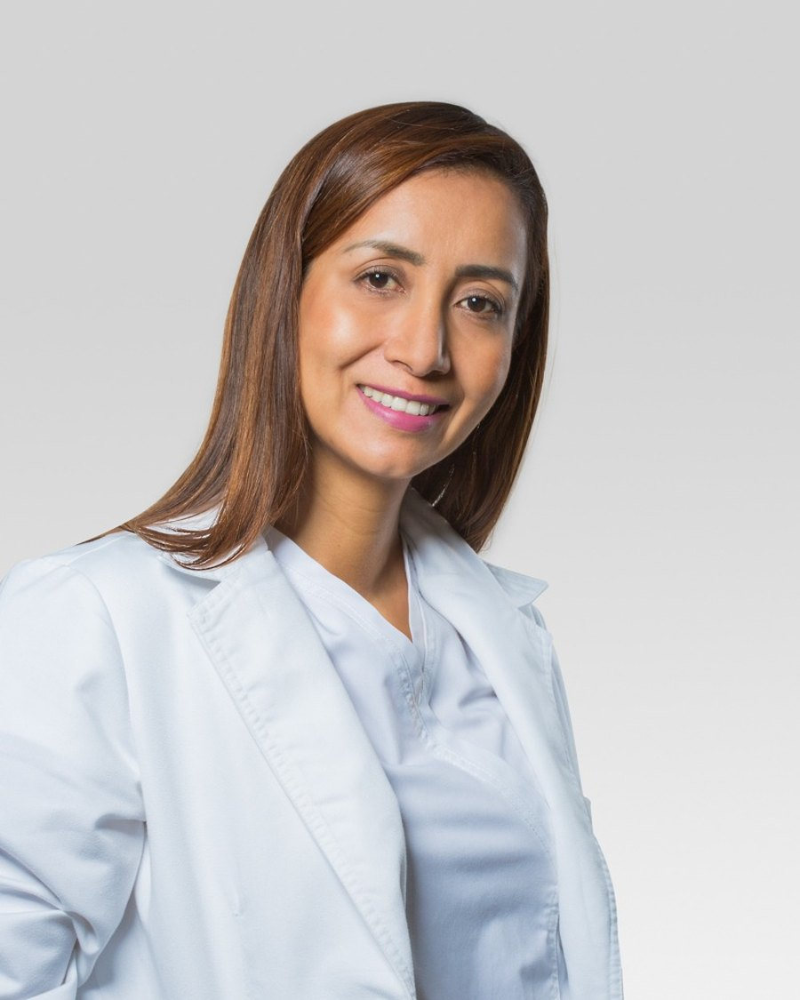
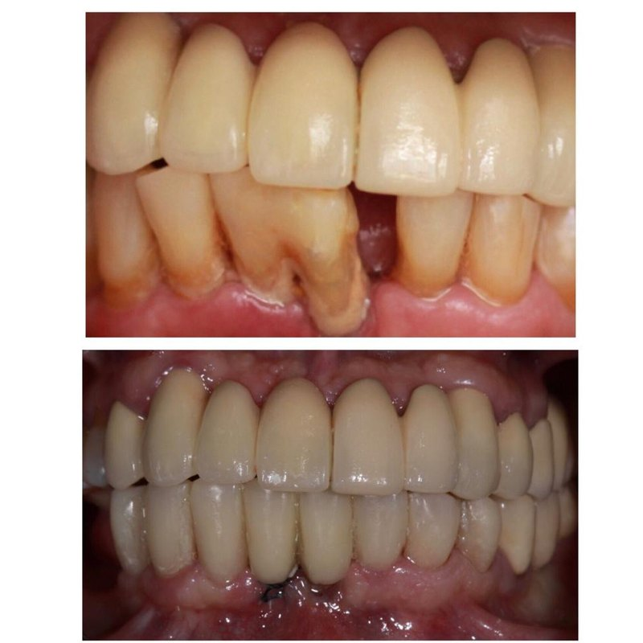
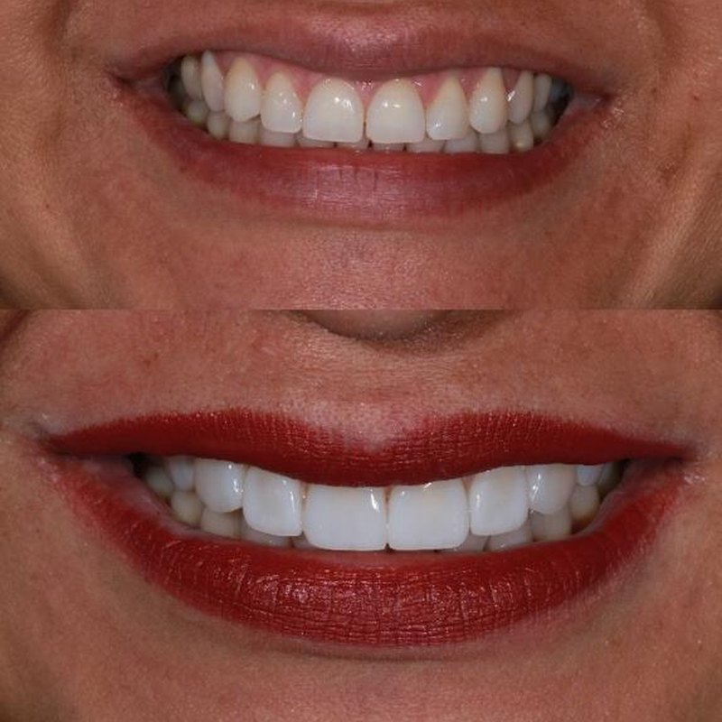
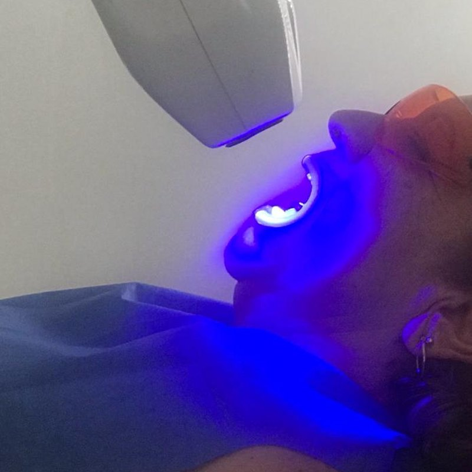
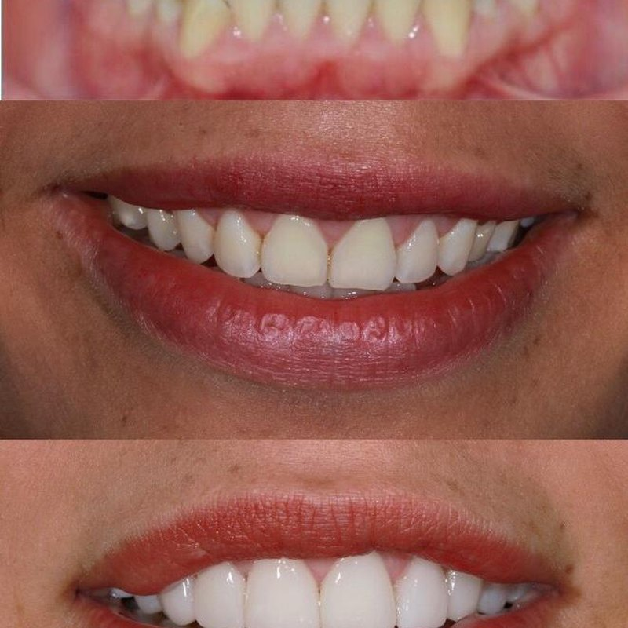
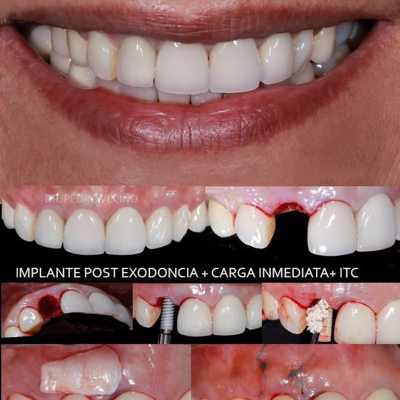

Rehabilitación Oral y Estética Dental
Clínica odontológica especializada en Bucaramanga. Tratamientos de alta complejidad estética y funcional: rehabilitación oral, diseño de sonrisa, blanqueamiento, ortodoncia e implantes dentales, con atención personalizada y los mejores materiales.

Somos una clínica de rehabilitación oral y estética dental con un equipo interdisciplinario encargado de ofrecer a cada paciente un servicio completo y especializado. Ofrecemos soluciones a las necesidades estéticas y funcionales garantizando atención personalizada, calidad odontológica y seguimiento a cargo de profesionales idóneos.
La Dra. Natalia Grandas es Especialista en Rehabilitación Oral de la Universidad Militar Nueva Granada y actualmente docente de clínica del Posgrado de Rehabilitación Oral de la USTA. Cada caso se atiende con criterio académico y materiales de la más alta calidad.
Conozca el perfilFormación postgradual en Rehabilitación Oral de la Universidad Militar Nueva Granada. Docencia activa del Posgrado de Rehabilitación Oral USTA.
Trabajamos con laboratorios de alta calidad para garantizar trabajos protésicos estéticos y duraderos en cada paciente.
Equipos modernos y materiales de la más alta calidad para procedimientos seguros, predecibles y de excelente acabado estético.
TRATAMIENTO ODONTOLÓGICO DE ALTA COMPLEJIDAD ESTÉTICA Y FUNCIONAL

Devolvemos función, estética y armonía cuando se ha perdido parte de la estructura dental o uno o varios dientes. Trabajamos con prótesis fijas o removibles, con convenios con los mejores laboratorios para garantizar excelente calidad.

Conjunto de procedimientos para lograr completa armonía entre sus dientes y rostro. Tratamientos previos de ortodoncia, márgenes gingivales, blanqueamiento y mejoras de forma y contorno con diferentes técnicas y materiales restauradores.

Tratamiento estético que reduce en varios tonos el color original de los dientes, dejándolos más blancos y brillantes. Diferentes técnicas con equipos y materiales de la más alta calidad para que el procedimiento sea completamente seguro.

Movemos sus dientes para dar completa armonía en alineación, posición y oclusión. Ofrecemos este servicio con las mejores técnicas y especialistas para que una vez terminado su tratamiento obtenga los resultados esperados.

Tornillo en titanio que se coloca en el maxilar o mandíbula para reemplazar uno o más dientes ausentes. Mejora fonación, masticación, función y estética en pacientes que han perdido piezas dentales.
Calle 54 # 33-45
Consultorio 806 · Edificio Centro Médico
Clínica Bucaramanga, Santander
"Me sentí muy bien asesorada por la Dra. Natalia y su equipo de trabajo, con una excelente calidad humana. Mi tratamiento fue perfecto, me encantaron los resultados, muy estético y sobre todo muy natural."
"Agradezco a la Dra. Natalia Grandas, quien siempre ha dispuesto todo su profesionalismo en mi tratamiento odontológico, logrando con los mejores materiales mi diseño de sonrisa, siempre conservando la naturalidad. Hoy estoy feliz con el resultado."
"La Dra. Natalia Grandas fue la encargada de transformar mi sonrisa y no podría estar más contenta por su trabajo. Es una profesional excelente y dedicada que se preocupa por sus pacientes para lograr resultados asombrosos. La recomiendo 100%."
"Más de 10 años dejando mi sonrisa en manos de la mejor. Gracias por tu profesionalismo, por tu entrega, por cuidar siempre de tus pacientes. Tu trabajo es impecable. Te recomiendo mil veces."
Pida su cita en la Clínica Bucaramanga, edificio Centro Médico consultorio 806. Valoración inicial sin compromiso.